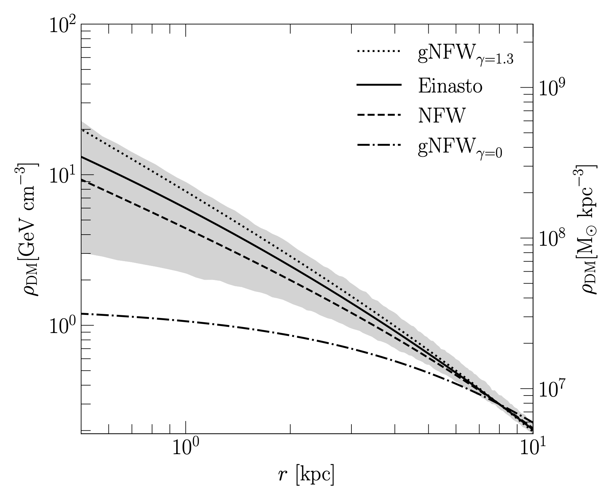
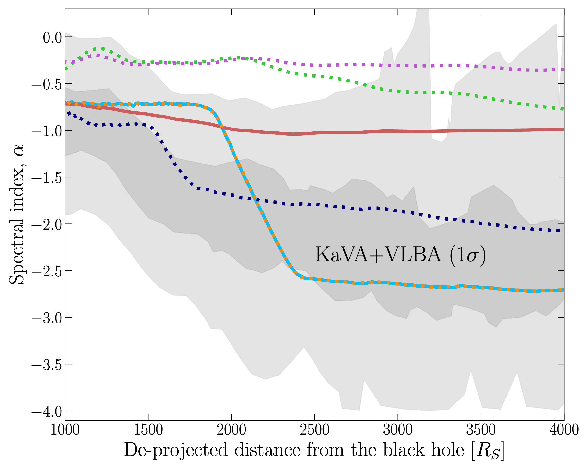

About Me
I'm a final(?) year PhD candidate at MIT working on theoretical astroparticle physics, with a focus on dark matter. I combine cosmological simulations with analytic models to understand how dark matter is distributed in galaxies, and what that means for experiments searching for it.
Publications
-
Mergers Matter: Gravothermal Collapse in Dwarf Halos with Self-Interacting Dark Matter
arXiv:2606.02566 · 2026
-
Formation and Redshift Evolution of Dark Matter Spikes
arXiv:2605.01023 · 2026
-
Dark Matter-Electron Interactions Alter the Luminosity and Spectral Index of M87
arXiv:2510.12877 · 2025
-
arXiv:2501.14868 · 2025
-
Statistical Study of Magnetospheric Conditions for SAPS and SAID
Geophysical Research Letters 49, e2022GL098469 · 2022
Nth author
-
Baryon-Accelerated Core Collapse in SIDM Halos and its Imprint on Galactic Disks
arXiv:2609.05600 · 2026
-
The Astrophysical Journal 1002, 8 · 2025
Research Projects
Theoretical Predictions for the Inner Dark Matter Distribution in the Milky Way
▶
Abstract
We build a theoretical range for the Milky Way's inner dark matter distribution informed by the FIRE-2, Auriga, VINTERGATAN-GM, and TNG50 simulation suites, assuming the canonical cold dark matter (CDM) model. This work provides crucial constraints for direct detection experiments and indirect dark matter searches by establishing robust predictions for the local dark matter density profile.

Research Experience & Impact
Dark Matter–Electron Interactions in M87
▶
Overview
Radio-loud galaxies such as M87 have a puzzlingly low radiative efficiency. In this paper we ask whether dark matter could explain this puzzle. The supermassive black hole at the center of M87 is expected to have grown a dense dark matter spike around it, and if light (sub-GeV) dark matter couples to electrons through a dark photon, it scatters off the relativistic cosmic-ray electrons in the jet and cools them, lowering the luminosity we observe. Requiring that this cooling not dim M87 below its observed luminosity sets competitive bounds on dark matter–electron interactions.
The spectral index as a new observable
The main result is that the radio spectral index of the jet can be used as an observable to constrain dark matter–electron interactions. We model the cosmic-ray electron distribution by numerically solving a transport equation along the jet and compute the spectral index at different distances from the black hole. Efficient dark matter cooling flattens the spectral index beyond what adiabatic and synchrotron cooling alone produce, in better agreement with KaVA and VLBA radio observations of M87. This is the first time spectral index measurements along a jet have been proposed as a probe of the particle nature of dark matter, opening a path to extend the method to larger samples of radio-loud AGN.
